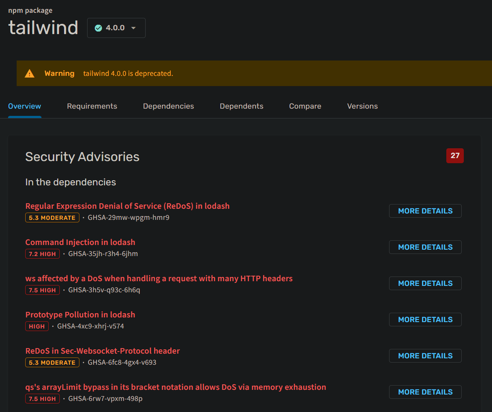
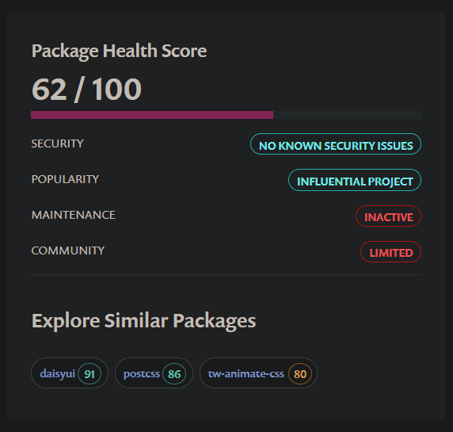

GOVERNANÇA
SCA
MANUAL V1.0
Lógica de Bibliotecas
Este fluxo fornece as diretrizes para que o desenvolvedor decida, de forma autônoma, entre a correção imediata de uma biblioteca, sua substituição ou o aceite de riscos residuais. O objetivo é proteger a Supply Chain.
1. Tabela de Decisão Rápida
Utilize esta tabela como filtro inicial ao identificar uma vulnerabilidade no Trivy ou deps.dev.
SEVERIDADE
PLANO DE AÇÃO IMEDIATO
WAIVER
ALTA/CRÍTICA (7.0+)
Bloqueio imediato ou update obrigatório se for alcançável.
RESTRITO
MÉDIA/BAIXA (<6.9)
Update se houver versão estável; caso contrário, monitorar.
PERMITIDO
2. Entenda a Métrica CVSS v4.0
A pontuação define a autonomia do desenvolvedor.
PONTUAÇÃO
AÇÃO DE GOVERNANÇA
AUTONOMIA
9.0 - 10.0
Escalonamento Crítico Obrigatório.
NENHUMA
7.0 - 8.9
Waiver exige busca comprovada de alternativas.
RESTRITA
0.0 - 6.9
Waiver permitido se Esforço > 16h.
TOTAL
3. Diferenciação de Contexto
O rigor da análise depende da natureza da dependência.
4. Fluxo de Decisão e Triagem
PASSO 1: IDENTIFICAÇÃO
Identifique a vulnerabilidade via Trivy ou deps.dev.
PASSO 2: TRIAGEM INTERATIVA
PASSO 3: BUSCA POR ALTERNATIVAS
Se a correção for inviável, busque alternativas no Snyk Advisor.
5. Avaliação de Esforço (Regra das 16h)
O esforço total (E = Ta + Ti + Tv) contempla todo o ciclo.
Regra das 16 Horas
Se a correção custar menos de 16h, ela é OBRIGATÓRIA.
6. Gestão de Waivers e Templates
NO GIT (MENSAGEM DE COMMIT)
Template
Waiver de Segurança: [CVE-ID]
Justificativa: [Motivo Técnico]
Status: Função isolada.
Prazo: 10 dias.